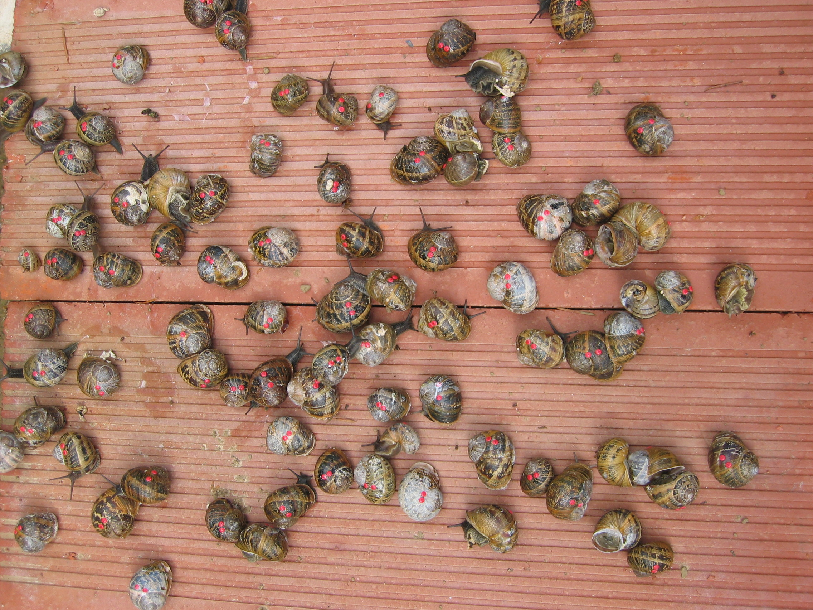

Hi!
I am an evolutionary ecologist interested in:
- urban ecology and evolution: How do organisms manage to persist in cities (or not)? How much do they have to change to do so? Can we predict it? What is the role of urban history and planning?
- animal dispersal, i.e. animals moving to reproduce away from their birth or previous reproduction sites: How, which individuals, why? What are the consequences?
I use lab experiments, field studies, data science tools and the occasional simulation to answer these questions.
I generally study land snails üêå, but I‚Äôve been involved in projects studying spiders üï∏Ô∏èüï∑Ô∏è, mites, insects ü™∞, plants üçĂĶ and snail parasites.
I am currently a Marie Skłodowska-Curie Fellow in the Terrestrial Ecology Unit @ Ghent University, in Belgium (project HELICITY).
